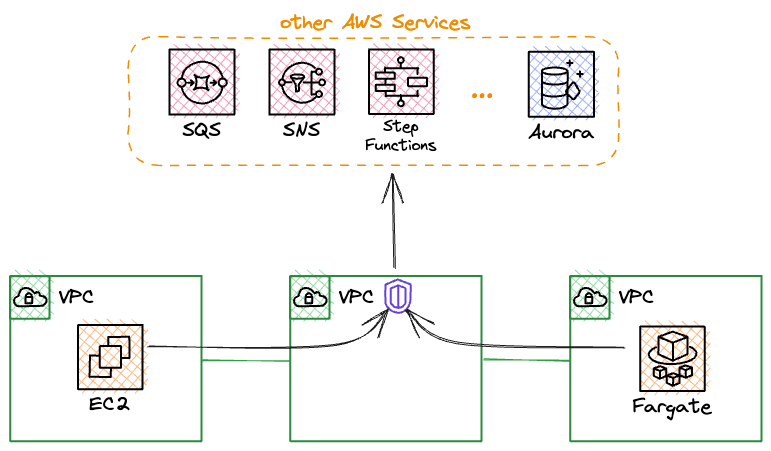
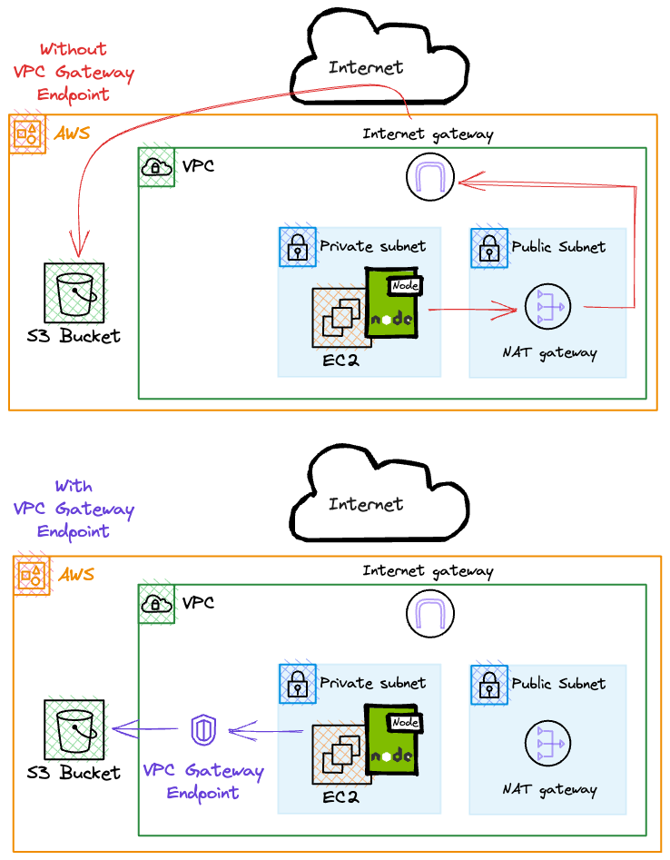

AWS VPC Endpoint Introduction
VPC Endpoint Introduction
A VPC endpoint enables customers to privately connect to supported AWS services and VPC endpoint services powered by AWS PrivateLink. Traffic between an Amazon VPC and a service does not leave the Amazon network.
VPC endpoints are virtual devices. They are horizontally scaled, redundant, and highly available Amazon VPC components that allow communication between instances in an Amazon VPC and services without imposing availability risks or bandwidth constraints on network traffic.
1. Interface endpoints
Interface endpoints enable connectivity to services over AWS PrivateLink. These services include some AWS managed services, services hosted by other AWS customers and partners in their own Amazon VPCs (referred to as endpoint services), and supported AWS Marketplace partner services.
An interface endpoint is a collection of one or more elastic network interfaces with a private IP address that serves as an entry point for traffic directed towards a supported service.

As VPC interface endpoints utilize PrivateLink, you’ll be charged for those endpoints by the hour and by the introduced data transfer.
2. Gateway endpoints
A gateway endpoint targets specific IP routes in an Amazon VPC route table, in the form of a prefix-list, used for traffic destined to Amazon DynamoDB or Amazon Simple Storage Service (Amazon S3).
Gateway endpoints do not enable AWS PrivateLink. Gateway endpoints don’t introduce any additional costs.
Example: The application resides in a private subnet and only requires access to Amazon S3. In this situation, we can use a VPC endpoint to maintain the application’s strict privacy while still granting it access to our files in S3. This eliminates the need for a NAT gateway in a public subnet and also removes the necessity to redirect traffic through the internet gateway.

Differences between 2 endpoint services
Instances in an Amazon VPC do not require public IP addresses to communicate with VPC endpoints, as interface endpoints use local IP addresses within the consumer Amazon VPC.
Gateway endpoints are destinations that are reachable from within an Amazon VPC through prefix-lists within the Amazon VPC’s route table.
Connectivity to AWS services using VPC endpoints

Comparision

Benefits of VPC Endpoints
1. Potentially Lower Latency
Routing traffic through the public internet introduces the possibility of increased latency. However, if all traffics remain within the AWS network, the latency can be reduced.
2. Reduced Data Fees
If you rely on a managed NAT Gateway, AWS charges data processing fees for egress traffic. This cost can be particularly significant when dealing with vast amounts of data, like at Amazon S3.
3. Less Attacking Surface and Security Risks
When accessing your customer’s data stored in DynamoDB from within your application, it is of utmost importance to ensure that the traffic remains within the AWS network. Allowing the data to leave the AWS network poses a significant security risk that could compromise the confidentiality and integrity of the information.
4. Enhanced Compliance and Governance
Depending on your industry or regulatory requirements, using public internet routing may not meet compliance standards. VPC endpoints offer a more controlled and compliant environment for accessing AWS services.